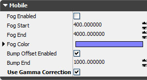
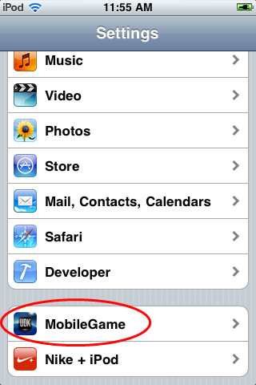
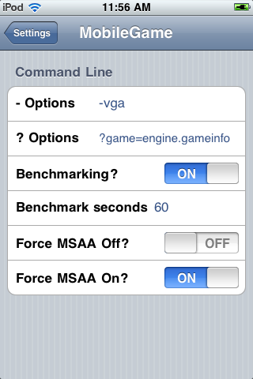

UDN
Search public documentation:
UnrealOniOS
日本語訳
中国翻译
한국어
Interested in the Unreal Engine?
Visit the Unreal Technology site.
Looking for jobs and company info?
Check out the Epic games site.
Questions about support via UDN?
Contact the UDN Staff
中国翻译
한국어
Interested in the Unreal Engine?
Visit the Unreal Technology site.
Looking for jobs and company info?
Check out the Epic games site.
Questions about support via UDN?
Contact the UDN Staff
Unreal Engine 3: Apple iOS Overview
Overview
Getting Started
Gamma Correction
To Enable Gamma Correction
Gamma correction on mobile platforms is not enabled by default. To make use of gamma correction for mobile games, enable the Use Gamma Correction property in the World Properties for your map(s). Performance Considerations
Gamma correction on mobile devices can cause a fairly noticeable impact on performance. It is mainly meant as a feature for use on future mobile devices. Currently, iPad 2 is the only device that is really capable of running games using gamma correction.VGA output
- You must run the game with -vga on the commandline
- You must have the VGA connector connected before the game starts up
- It queries the VGA device for supported resolutions, and chooses the highest resolution whose width is no more than 1024 (which is used to generally match the iPad resolution of 1024x768)
- Loading screens/movies will usually look incorrect
- Touch input is done on the device, in the solid pink area. However, there is currently no remapping of the input locations, so if the resolution is chosen to be 640x480, you would need to use the upper left 640x480 area of the pink area.
Commandline settings via iOS Settings app
//depot/UnrealEngine3/UDKGame/Build/IPhone/Resources/Settings/Settings.bundle/Root.plist //depot/UnrealEngine3/UDKGame/Build/IPhone/Resources/Settings/Distro_Settings.bundle/Root.plistHere is what you can see in Settings:
|  |  |
<dict>
<key>Type</key>
<string>PSToggleSwitchSpecifier</string>
<key>Title</key>
<string>Benchmarking?</string>
<key>Key</key>
<string>-benchmark</string>
<key>DefaultValue</key>
<false/>
</dict>
<dict>
<key>Type</key>
<string>PSTextFieldSpecifier</string>
<key>Title</key>
<string>Benchmark seconds</string>
<key>Key</key>
<string>-benchmarkseconds=</string>
<key>KeyboardType</key>
<string>NumberPad</string>
</dict>
There are many things to set, each being two lines, - Type - This is the setting type. PSToggleSwitchSpecifier is an On/Off switch, PSTextFieldSpecifier is a text box.
- Title - This is what is displayed to the user (if it's too long, TextFields will have little room to display the text)
- Key - This is the critical information. This is what is put directly onto the commandline. It must start with
-or?. For Toggles, the Key will be put onto the commandline if the Toggle is set on On. For TextFields, the Key will be put onto the commandline if the text is not empty, then followed by the text entered by the user. - DefaultValue - You can set what to initialize the setting's value to whatever you want.
- KeyboardType - What type of keyboard to use. See the docs for more information about TextFields.
Non-commandline uses of Settings app
Version string
[Build.Version] bForceShowAppVersion=False bForceHideAppVersion=False